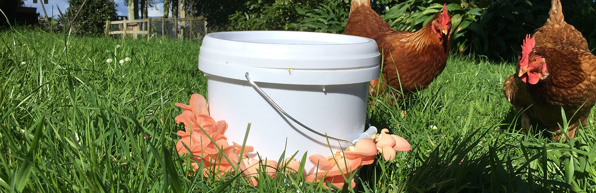
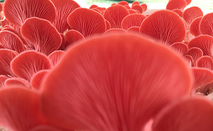

Our Philosophy
Our flagship philosophy is zero-waste and synergy with the environment.
We utilise natural ecosystems to encourage mushrooms to grow in our domestic environment. We mimic organic structures to work in our favour by running alongside the processes that already exist in nature. We dont use any insecticide, fungiside or herbicide on our crops. We are fascinated by fungi and belive that fungi hold the keys to a healthy future of environmental restoration, a move away from dairy farming as the backbone of our economy and a zero-carbon emmission way to produce food that feeds and fortifies our bodies as well as our environment.

 Sadly all other New Zealand wild mushroom culitvators employ single-use plastic bags as their growing container. Although this makes it easier to produce a favourable environment in which to grow mushrooms, it is not environmentally responsible and only adds to our pollution problem.
We have spent many hours researching and experimenting with reusable containers and have developed a system using reusable food-grade plastic buckets as our growing containers. We also use reusable glass jars as the container for our spawn (mushroom starter) production, as opposed to single-use plastic bags that all other spawn producers use.